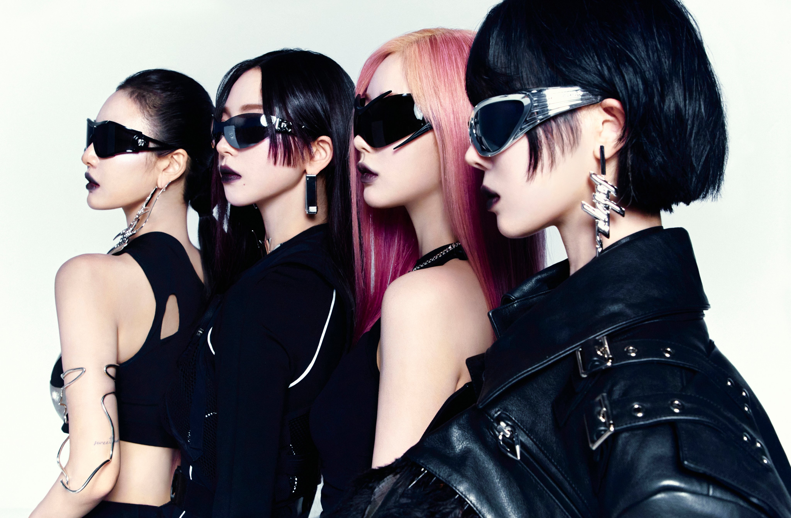

aespa

由韓國SM娛樂旗下2020年所推出的四人女子組合，由Ningning、Karina、Giselle、Winter組成，並由Karina擔任隊長。
團體同時也擁有四名AI成員(æ)存在於元宇宙。
2020年11月17日，以單曲《Black Mamba》出道
團名由來
aespa（符號化為æspa）是由寓意「化身」（Avatar）及「經歷」（Experience）的首寫字母組成的「ae」加上有「雙面」之意的「Aspect」結合
團體也將根據各種活動體現團體的主旨——「遇見另一個自我化身，體驗全新世界」。
應援顏色
aespa的官方應援顏色為極光色（Aurora)
粉絲名稱
2020年11月17日，官方公開團體的粉絲名稱為MY。在虛擬角色所居住的Kwangya（曠野）中，MY寓意為「最珍貴的朋友」。
問候語
問候語為「Be my æ」，在說出問候語的同時以右手的食指及中指由左眼劃至右眼，並在說「æ」的時候將手指打開呈現剪刀狀。